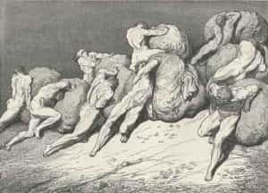

Daryush "Roosh" Valizadeh created ROK in October 2012. You can visit his blog at RooshV.com or follow him on Twitter and Facebook.


I used to take personal achievement very seriously. If I wasn’t achieving, accomplishing, or even doing something productive, I believed I was moving backwards in life, wasting away like a drug addict. Metrics had to be hit, whether related to money, women, fitness, web site views, or accumulated knowledge. Otherwise, I was not realizing my true potential.
Looking back, I see that my thinking was flawed, and my achievements were really nothing more than conversions of one form of energy into another. It’s not so much that I was creating something out of nothing, but playing a game of musical chairs.
Willpower is needed to go from doing an easy activity, like watching television or napping, to a hard activity, like going to the gym and activating your muscles. Time is needed to read or study resources that teach you how the activity is competently done, and of course the actual time to do it. That’s the formula to achieve anything in life, and when that happens, what you’re really skilled at is not necessarily the activity itself, but dedicating willpower and time in a way that many others cannot.
Why are some men so good at summoning willpower and time to specific goals? How can I have labored for so many years getting laid around the world when most other men can’t be bothered? How can a man go to the gym four times a week when I’m fine with going once or twice? What can push men to completely dedicate themselves around achieving a materialist goal that surpasses their true biological and physical need? The answer is emotion. The only way to push a man beyond what his nature requires is to make him feel so emotionally inadequate and insecure that he feels the only way to patch up the hole is to dedicate his being—and sometimes his entire life—to the achievement.
I was a late bloomer who didn’t go through puberty until my late teens. This wrecked my confidence with women and caused me to get less attention than my male peers, leaving a gaping void around women and masculinity that had to be filled with 13 years of achievement in game that I shared publicly with the world in the process of becoming a teacher and “influencer,” until finally in my mid 30’s the hole was patched and I no longer wanted to dedicate as much willpower and time into the same tasks.
Look at a man who is most obsessed about money and you will uncover memories of his youth where he felt ashamed for not having toys his friends had. Look at men who have the biggest muscles and you’ll uncover stories of being picked on in childhood. The only motivator that causes men to go above and beyond any area of achievement is inadequacy, and when that hole is filled, the willpower and time spent on the task will fade. The man will then feel frustrated and unsure of what to do next.
The self-realized and content man is a loser in the eyes of others, because he never surpasses his need enough to be a public expert in anything. He is fine with an average income, average sex life, average body, because he has no emotional hole that is begging him to convert his willpower and time into grand achievement. If a woman is self-realized, why would she feel the need to show off her body and genitals to the world through pictures and revealing clothing? Why would she ache for fleeting sexual encounters that rarely even comes with orgasmic pleasure? Look at a person’s goals and you can discover where they suffered emotional pain.
I’ve met men who, to bang more women, take supplements to increase their horniness. They have used game to satisfy their sexual needs, but once that happened, their ego wanted more and forced them to artificially manipulate their need so the banging could continue. Game started as a tool for them, subservient to their being, but now it’s their master. Productivity gurus do the same when it comes to money. They teach you how to manipulate your schedule, lifestyle, eating habits, and personal relationships all to accommodate more money making, so you’re an accomplished merchant in the eyes of others.

Of course I’m not giving you an excuse to be homeless, unhealthy, or to choose a life of involuntary celibacy because you are afraid of taking social risks, but there is wisdom is knowing when enough is enough. If you have to take dubious supplements and sustain injuries to achieve your fitness goals, you’ve surpassed your body’s need. If you’re cutting off potential long-term relationships or love because you want to bang more girls to brag to your friends, you’re merely trying to fill a hole. If you’re exhausting yourself at work because you want to buy a toy that you don’t need, you’re trying to find self-worth in the material, and if you have a goal where, upon achieving it, you simply decide to gain more of it, you’ve found not a goal but a black hole, and soon your life will revolve entirely around it.
I’m currently writing a new book. Usually I’d make sacrifices to other parts of my life to finish it quicker, but then the book, the achievement, ends up owning me during that entire time. I don’t need more fame or more money, so I’ll write the book at my own pace, and when it’s finally done, people can buy it if they want. Unless I can enjoy the process of writing a book on a timeline that feels balanced for me, I allow the goal to become my master. Once you achieve basic material comfort, work on goals without timelines, without pressure. Enjoy them for their own sake instead of what they may provide.
I have to warn you that if you follow my advice, you will watch as others pass you by. They will get more money, women, and fame than you. They will dangle their prizes in front of you and teach you how to work as hard as them, and try to make you feel like a loser if you don’t. But they’re just converting their emotional holes into willpower and time and finally into materialistic achievement that can be measured and compared. This is why achievement has to involve a number to keep score: number of bangs, net worth, bench press one rep max, number of Youtube views, number of countries visited, and so on. The best way to win this kind of numbers game is not to play at all. Let others choose to be a slave to numbers while you never lose touch of your true need.
Passing on things I’ve learned to you as I approach middle age may come across as foolish, especially for those of you who are under 35. If you are young and full of both energy and the need to prove yourself to the world, it’s best you ignore my advice and keep converting your willpower and time into the type of achievement you believe will satisfy you. In a best case scenario, your achievement will patch a hole, like it did mine, and you can release it as a goal and pursue it at your own enjoyment. In the worst case scenario, you go deeper and let the goal control you, watching hopelessly as your self worth paradoxically goes down upon comparing yourself to men of even higher achievement who are just slightly better than you at converting their time and willpower into materialistic gain.
When I started looking at achievement as mere conversion of one form of energy into another, I started doing things for myself and those in my inner circle than for the world, because it’s not really achievement that is taking place when I write an article like this or a book—it’s just the moving of furniture in a room. I hope I’ll soon forget about achievement so I can become an average man, a mediocrity in the eyes of the accomplished, but after pursuing it for so long, and becoming a “somebody” in the eyes of many, I wonder if it’s really possible to go back.
This article was originally published on Roosh V.
Read Next: You Become What You Fight